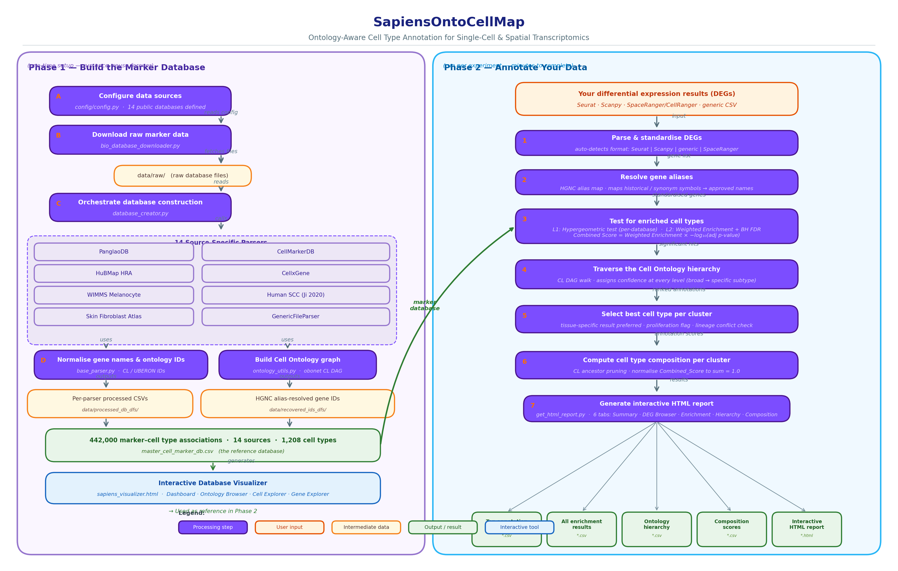

SapiensOntoCellMap
Ontology-Aware Cell Type Annotation for Single-Cell & Spatial Transcriptomics
Python 3.10+
MIT License
GitHub

Ontology-Aware Cell Type Annotation for Single-Cell & Spatial Transcriptomics
SapiensOntoCellMap annotates cell clusters from single-cell RNA-seq and spatial transcriptomics experiments using a consolidated, ontology-normalized marker database built from 14 curated public sources. Annotation is performed via hypergeometric enrichment testing with Benjamini-Hochberg global FDR correction and evidence-weighted scoring — without requiring a reference atlas or pre-trained model.
The key differentiator is Cell Ontology (CL) graph traversal at annotation time. For every significant hit, the tool walks the CL DAG from the matched cell type up to the ontology root, recording confidence at every ancestor level. This yields a hierarchical annotation — from broad lineage (e.g., lymphocyte) down to specific subtype (e.g., CD8-positive, alpha-beta cytotoxic T cell) — in a single enrichment run. Supported inputs include Seurat, Scanpy, SpaceRanger/CellRanger, Atera, and any generic CSV.
Existing tools either require a reference atlas, lack spatial support, or give only a single flat label. SapiensOntoCellMap is the first open-source tool to deliver ontology-aware hierarchical annotation for both scRNA-seq and spatial data without a reference atlas.
| Tool | Ontology-aware | No reference atlas needed | Spatial support | Hierarchical output | Open-source |
|---|---|---|---|---|---|
| SapiensOntoCellMap | ✅ CL DAG traversal | ✅ | ✅ All platforms | ✅ Broad → subtype | ✅ |
| OnClass | ✅ embeddings | ❌ needs reference | ❌ | ❌ single label | ✅ |
| CellO | ✅ hierarchical | ❌ needs reference | ❌ | ⚠️ partial | ✅ |
| scType | ❌ | ✅ | ⚠️ limited | ❌ | ✅ |
| Manual curation | ❌ | ✅ | ✅ | ❌ | N/A |
A one-time download and parse of 14 public marker databases. Genes are normalized via the HGNC alias map. The resulting master database contains 442,000 marker–cell type associations, de-duplicated and evidence-weighted. Run time: ~10–20 minutes.
Flexible updates: add any new source by dropping in a CSV and one config entry, then re-running DatabaseCreate. Existing annotations are unaffected; new cell types are auto-integrated. No rebuild of prior results required.
For each cluster, differentially expressed genes are tested against the marker database using hypergeometric enrichment with BH FDR correction. The CL ontology DAG is then traversed for every significant hit, building a full confidence hierarchy from broad lineage to specific subtype. Output is a self-contained interactive HTML report.

Figure 1. SapiensOntoCellMap pipeline. Phase 1 (left): one-time marker database construction from 14 curated sources, with flexible update support — add any new source via a CSV and one config entry. Phase 2 (right): per-experiment cell type annotation via weighted enrichment testing and CL ontology traversal.
For each cluster i and cell type c, SapiensOntoCellMap tests whether the overlap between cluster DEGs and the cell type's reference markers is greater than expected by chance. The p-value is calculated from the hypergeometric distribution (one-sided, P(X ≥ k)) and corrected globally across all cluster × cell type pairs using Benjamini-Hochberg FDR.
Evidence weighting assigns per-gene weights based on source type: Experiment (1.0) > Single-Cell Sequencing (0.9) > Company (0.8) > Literature (0.7) > Review (0.6) > Computational (0.5). The Combined_Score = Weighted_Enrichment × -log10(adj_p) ranks candidates without inflating statistical tests.
After enrichment testing, each significant cell type hit is looked up in the Cell Ontology (CL) DAG. The tool walks all ancestor paths from the matched node to the ontology root (CL:0000000), recording the confidence score at every ancestor level. This produces the Hierarchy tab: an icicle chart where each row is a CL depth level, and color intensity encodes how strongly each ancestor is supported by the cluster's DEGs.
This traversal requires no reference atlas — it only needs the CL ontology file (downloaded automatically) and the enrichment scores computed in Phase 2.
After CL ancestor pruning (removing redundant ancestor nodes and obsolete CL terms), the Combined_Score values for leaf-level cell types are normalized to sum to 1.0 per cluster, yielding annotation-derived composition scores. These are output as *_composition_scores.csv and visualized as a stacked bar chart in the Composition tab of the HTML report.
This approach does not require a raw expression matrix — it works directly from DEG-based enrichment results, making it applicable to both scRNA-seq and spatial data.
Accuracy was evaluated on two publicly available datasets with established ground-truth labels, covering both single-cell and spatial transcriptomics modalities.
Accuracy colour key: ● Exact = Top_Cell_Type shares a word-level token with the ground-truth label; ● Partial = correct broad cell class or ground-truth type appears anywhere in the CL hierarchical lineage traversed for that cluster; ● Miss = no match at any level. Reported accuracy = (Exact + Partial) / total clusters.
Three steps from zero to annotated clusters.
Clone the repository and install with uv (recommended) or pip.
git clone https://github.com/Sonal1510/SapiensOntoCellMap.git
cd SapiensOntoCellMap
# Recommended — fast, isolated, reproducible
uv venv && uv pip install -e .
# Alternative
pip install -e .One-time setup: downloads and parses all 14 public databases.
python scripts/build_marker_db.py
# ~10-20 min, downloads 14 public databasesRun annotation on your DEG file. Works for scRNA-seq, spatial, and generic CSV inputs.
python src/cluster_annotation/get_cluster_annotation.py \
my_degs.csv my_experiment results/ \
--deg_type scrna@software{sapiensontocellmap2026,
author = {Rashmi, Sonal},
title = {{SapiensOntoCellMap}: Ontology-Aware
Cell Type Annotation for Single-Cell
and Spatial Transcriptomics},
year = {2026},
url = {https://github.com/Sonal1510/
SapiensOntoCellMap}
}| Database | Reference | URL / DOI |
|---|---|---|
| PanglaoDB | Franzén et al., Database 2019 | panglaodb.se |
| CellMarker 2.0 | Zhang et al., NAR 2023 | biocc.hzau.edu.cn/CellMarker |
| HuBMAP HRA | Börner et al., Nat Cell Biol 2021 | humanatlas.io |
| CellxGene | Megill et al. 2021 | cellxgene.cziscience.com |
| Cell Ontology (CL) | Diehl et al., Genome Biol 2016 | obofoundry.org/ontology/cl |
| UBERON | Mungall et al., Genome Biol 2012 | obofoundry.org/ontology/uberon |
| HGNC | Seal et al., NAR 2023 | genenames.org |